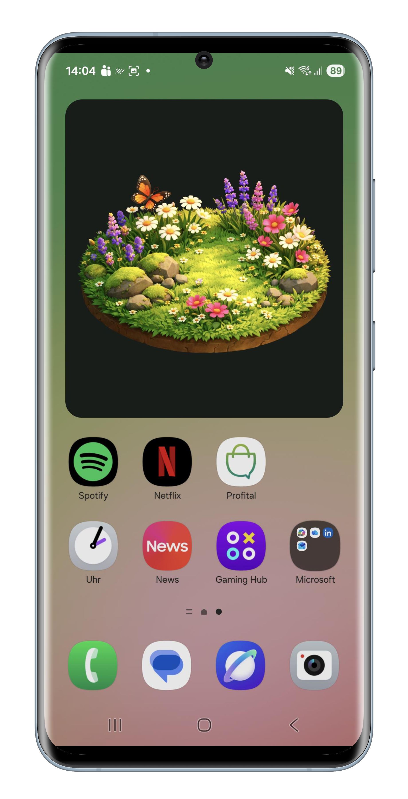
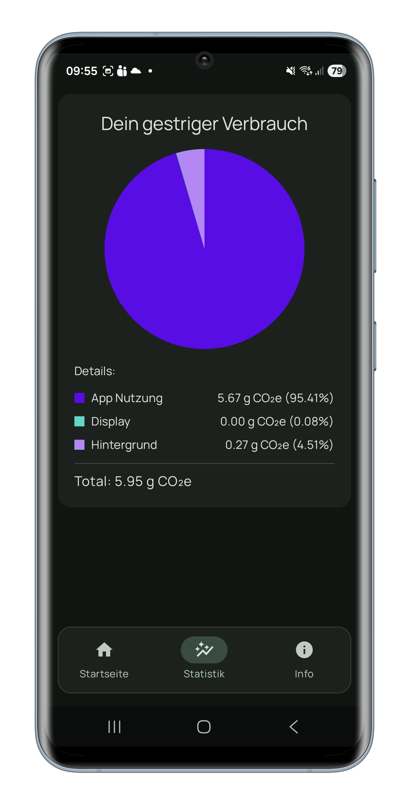
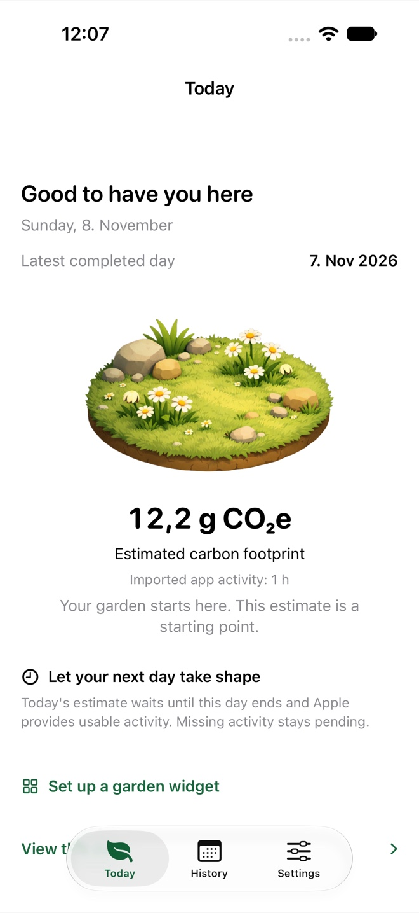
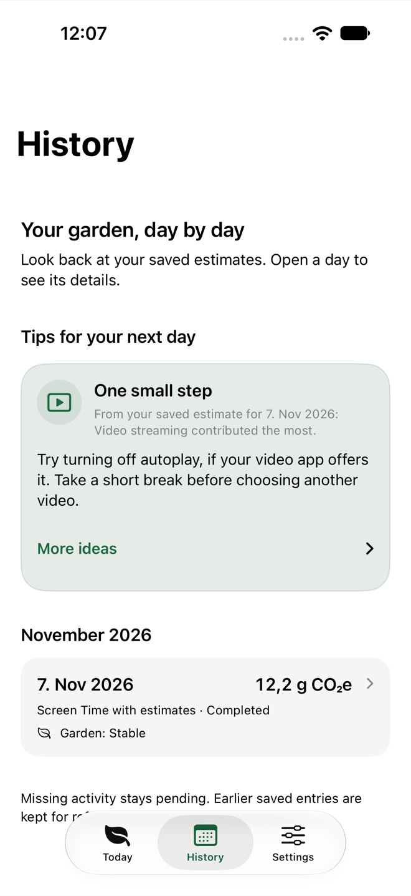

Explore the footprint of your phone use
Digital Footprint Explorer (DFE) is a research app from the Zurich University of Applied Sciences (ZHAW). It estimates greenhouse gas emissions linked to everyday phone activities such as messaging, social media and video streaming.
A digital garden shows how each day compares with up to seven earlier days on your phone. It looks greener when the estimate falls well below your recent average. You can also open the app to see the figures behind the garden.
Get the app
Android
Download DFE for free from Google Play or scan the QR code.
Open DFE and follow the steps to allow usage access. An Android service tracks the activity used by the model. Add the garden widget to your Home Screen or open the app to see a breakdown of your estimate.
iPhone
The iPhone app is being prepared for release in Switzerland. It requires iOS 26.4 or later. Automatic daily estimates use the Screen Time activity Apple makes available after you give permission.
We tested with development access in Switzerland. Access for Swiss App Store users is still awaiting confirmation. Visit iOS support for setup and device details.
Android preview


iPhone preview


How DFE estimates your footprint
The model estimates emissions from running apps, using the screen and background activity. It also accounts for the energy used by networks and servers. Results are shown in carbon dioxide equivalents (CO₂e), a common unit for comparing greenhouse gases.
The phone supplies some of the activity data. The model uses assumptions for other inputs, such as data traffic on iPhone. A result helps you compare days, while the garden shows how the estimate changes over time.
Data and privacy
DFE calculates estimates on your phone using the activity data you give it permission to access. It keeps your history on the device and has no project server for usage data. If you enable Apple Watch sharing, your paired Watch receives a summary of the latest saved result.
Your device settings may include app data in a backup. GitHub Pages handles connections to this site, and email services handle any message you choose to send. See the iOS privacy policy for details about the iPhone app and its widgets.